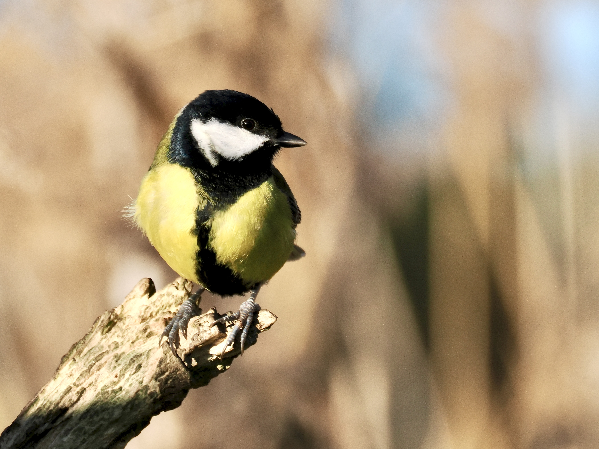
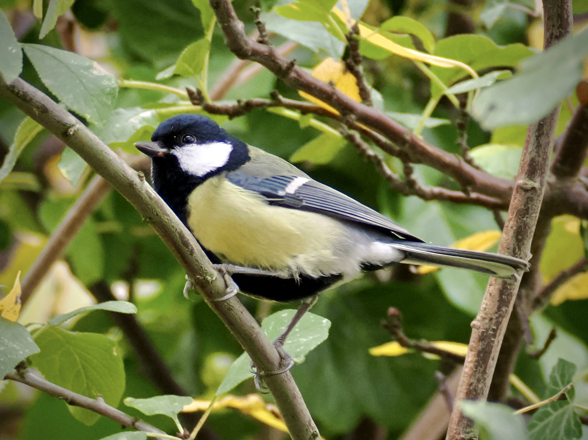
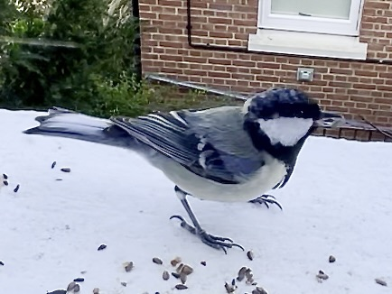

Great Tit
Parus major
Order: Passeriformes
Family: Paridae

A large tit with a black head, white cheeks, greenish back, and yellow belly. Has a black vertical stripe on the belly, which is thicker in males.

I frankly do find them a bit annoying, as they are a "sentinel" species that alerts each and every bird in the area about a potential threat. In many cases, that would be me. I totally see the point, but it's such a bummer when I'm watching some siskins or something and suddenly a Great Tit starts calling and scares all of them away.

This is an aberrant individual with a less green back and some whitish tail feathers.